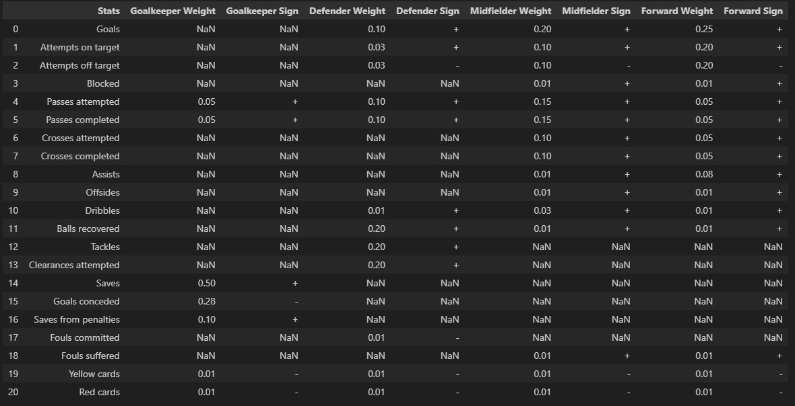
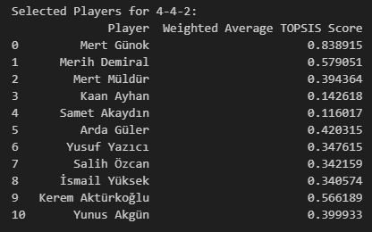
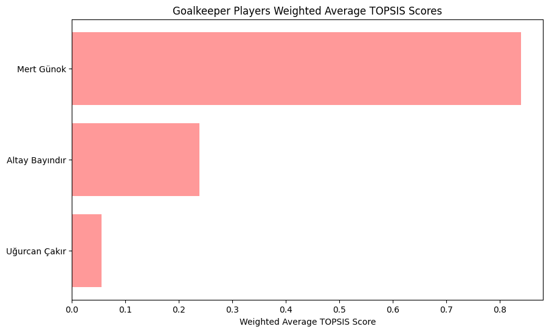
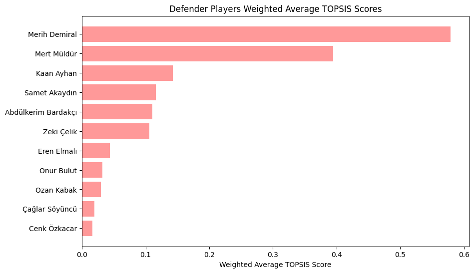
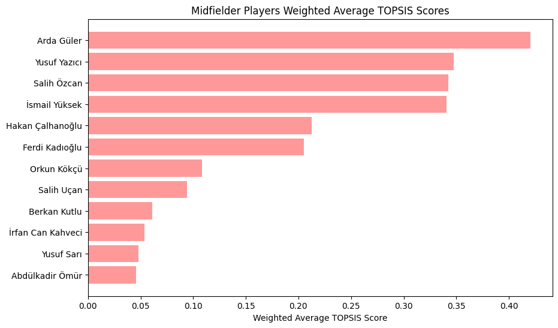
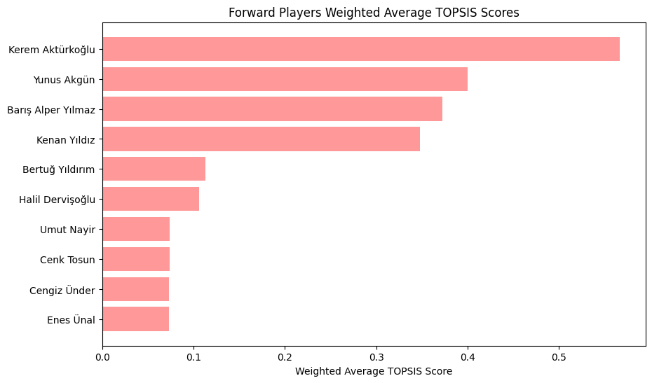
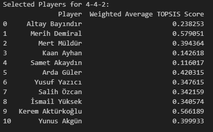

import pandas as pd
import numpy as np
import matplotlib.pyplot as pltGiriş
2024 Avrupa Futbol Şampiyonası’ndaki son grup maçı öncesinde, Türkiye’nin en iyi performansı sergilemesi için en uygun kadroyu belirlemek hayati önem taşıyor. Bu süreçte, TOPSIS gibi çok kriterli karar verme yöntemleri teknik ekibe en ideal kadroyu oluşturma konusunda önemli bir rehberlik sağlayabilir.
Kullanılacak Kütüphaneler
TOPSIS
Tanım
TOPSIS (Technique for Order Preference by Similarity to Ideal Solution), çok kriterli karar verme (MCDM) problemlerinde kullanılan etkili bir yöntemdir. 1981 yılında Hwang ve Yoon tarafından geliştirilen bu yöntem, alternatiflerin değerlendirilmesinde ideal ve negatif-ideal çözümlerle olan benzerlikleri dikkate alarak sıralama yapar. TOPSIS’in temel amacı, en iyi alternatifi seçmek veya mevcut alternatifleri belirli kriterler doğrultusunda sıralamaktır.
Hesaplama Adımları
TOPSIS’in hesaplaması 7 adımda açıklanabilir.
Karar Matrisi Oluşturma: İlk adımda, alternatifler ve kriterler belirlenir ve bu alternatiflerin her bir kriter için performans değerleri karar matrisi şeklinde düzenlenir.
Normalize Edilmiş Karar Matrisi: Karar matrisi, kriterlerin farklı ölçeklerde olmasından dolayı normalize edilir. Bu adım, tüm kriterlerin ortak bir ölçek üzerinde değerlendirilmesini sağlar.
Ağırlıklı Normalize Edilmiş Matris: Kriterlerin önem derecelerine göre ağırlıklandırılması yapılır ve normalize edilmiş karar matrisi ile bu ağırlıklar çarpılır.
İdeal ve Negatif-İdeal Çözümler: Her bir kriter için en iyi (ideal) ve en kötü (negatif-ideal) değerler belirlenir. İdeal çözüm, kriterlerin maksimum fayda veya minimum maliyet değerlerini içerirken, negatif-ideal çözüm tam tersidir.
İdeal ve Negatif-İdeal Çözümlere Uzaklıkların Hesaplanması: Her bir alternatifin ideal ve negatif-ideal çözümlere olan uzaklıkları hesaplanır. Bu uzaklıklar, Öklidyen mesafe kullanılarak belirlenir.
Göreceli Yakınlık Değerlerinin Hesaplanması: Alternatiflerin ideal çözüme yakınlık dereceleri hesaplanır. Bu değer, negatif-ideal çözüme olan uzaklıkların toplam uzaklığa oranı olarak bulunur.
Alternatiflerin Sıralanması: Son adımda, göreceli yakınlık değerlerine göre alternatifler sıralanır. En yüksek yakınlık değeri, en ideal alternatifi gösterir.
Kullanılacak İstatistikler
Turnuva Aşamalarına Göre Kullanılacak İstatistikler
UEFA Avrupa Şampiyonası eleme aşamaları iki ana bölüme ayrılır: Qualifying (eleme) ve Main tournament (ana turnuva).
- Qualifying (Eleme): Bu aşama, Avrupa’daki milli takımların ana turnuvaya katılmak için yarıştığı süreçtir. Eleme grupları oluşturularak maçlar yapılır ve bu maçlar sonunda en iyi takımlar ana turnuvaya katılma hakkı kazanır.
- Main Tournament (Ana Turnuva): Bu, eleme aşamasını geçen takımların katıldığı nihai turnuvadır.
Her iki aşama da skorlar hesaplanırken ağırlıklandırılacaktır.
Maç İstatistikleri Açıklamaları
Veri setlerinde aşağıdaki istatistikler bulunmaktadır.
- Kategori: Goals (Goller)
Goals - Goller: Futbolcunun maç sırasında attığı gol sayısı.
- Kategori: Attempts (Denemeler)
Attempts on target - Kaleyi bulan şutlar: Futbolcunun kaleyi bulan şut sayısı.
Attempts off target - Kaleyi bulmayan şutlar: Futbolcunun kaleyi bulmayan şut sayısı.
Blocked - Bloke edilen şutlar: Rakip oyuncular tarafından engellenen şut sayısı.
- Kategori: Distribution (Dağıtım)
Passes attempted - Denenen paslar: Futbolcunun pas atma girişimlerinin toplam sayısı.
Passes completed - Tamamlanan paslar: Futbolcunun başarılı bir şekilde takım arkadaşına ulaştırdığı pas sayısı.
Crosses attempted - Denenen ortalar: Futbolcunun ceza sahasına veya ceza sahası yakınına yaptığı orta denemeleri.
Crosses completed - Tamamlanan ortalar: Futbolcunun başarılı bir şekilde takım arkadaşına ulaştırdığı orta sayısı.
- Kategori: Attacking (Hücum)
Assists - Asistler: Futbolcunun takım arkadaşına gol atması için yaptığı son pas sayısı.
Offsides - Ofsaytlar: Futbolcunun ofsayt pozisyonunda yakalandığı durumlar.
Dribbles - Top sürme: Futbolcunun rakip oyuncuları geçmek için topu kontrol ederek yaptığı hareketlerin sayısı.
- Kategori: Defending (Savunma)
Balls recovered - Kazanılan toplar: Futbolcunun rakipten kaptığı veya yeniden kazandığı top sayısı.
Tackles - Müdahaleler: Futbolcunun rakip oyuncudan topu almak için yaptığı müdahale sayısı.
Clearances attempted - Denenen uzaklaştırmalar: Futbolcunun rakip ceza sahasından topu uzaklaştırma girişimleri.
- Kategori: Goalkeeping (Kalecilik)
Saves - Kurtarışlar: Kalecinin rakip oyuncunun şutunu engellediği kurtarış sayısı.
Goals conceded - Yenilen goller: Kalecinin kalesinde gördüğü gol sayısı.
Saves from penalties - Penaltı kurtarışları: Kalecinin penaltı vuruşunu kurtardığı durumlar.
- Kategori: Disciplinary (Disiplin)
Fouls committed - Yapılan fauller: Futbolcunun rakip oyuncuya karşı yaptığı faul sayısı.
Fouls suffered - Uğranılan fauller: Futbolcunun rakip oyuncu tarafından kendisine yapılan faul sayısı.
Yellow cards - Sarı kartlar: Futbolcunun hakem tarafından gördüğü sarı kart sayısı.
Red cards - Kırmızı kartlar: Futbolcunun hakem tarafından gördüğü kırmızı kart sayısı.
Futbolcu Pozisyonları Açıklamaları
Goalkeeper (Kaleci): Kaleci, takımın kalesini koruyan oyuncudur. Rakip takımın şutlarını engellemek, topları yakalamak veya uzaklaştırmak, savunmayı organize etmek gibi görevleri vardır.
Defender (Savunma Oyuncusu): Savunma oyuncuları, rakip takımın gol atmasını engellemeye çalışır. Savunma hattında pozisyon alarak topu kapmak, müdahale etmek, topu uzaklaştırmak gibi görevleri vardır.
Midfielder (Orta Saha Oyuncusu): Orta saha oyuncuları, takımın hem savunma hem de hücum görevlerini üstlenir. Topa sahip olma, pas dağıtma, oyunu yönlendirme, gol fırsatları yaratma ve savunmaya yardımcı olma gibi çeşitli görevleri vardır.
Forward (Forvet Oyuncusu): Forvet oyuncuları, takımın gol atma görevini üstlenen oyunculardır. Rakip kale önünde pozisyon alarak gol fırsatları yaratma ve gol atma gibi görevleri vardır.
Pozisyonlara Göre Kullanılacak İstatistikler, Ağırlıklar ve İşaretler
Hem pozisyonlara göre kullanılacak istatistikler hem de ağırlıklar ile işaretlerin tablosu aşağıdadır.

İdeal Kadronun Belirlenmesi
Skorları Hesaplayacak Fonksiyonun Yazılması
def calculate_topsis_score(position, main_df, weights_df, score_col_name):
# Adım 1
norm_main_df = [col for col in main_df.columns if col not in ['Player', 'Position', 'Matches played', 'Minutes Played']]
main_minutes_played = main_df['Minutes Played']
main_df[norm_main_df] = main_df[norm_main_df].div(main_minutes_played, axis=0)
# Adım 2
position_weights = weights_df[['Stats', f'{position} Weight', f'{position} Sign']].dropna()
position_stats = position_weights['Stats'].tolist()
position_stats = [col for col in position_stats if col in main_df.columns]
position_weights_values = position_weights[f'{position} Weight'].tolist()
position_signs = position_weights[f'{position} Sign'].tolist()
position_weights_values = [weight for stat, weight in zip(position_weights['Stats'], position_weights_values) if stat in position_stats]
position_signs = [sign for stat, sign in zip(position_weights['Stats'], position_signs) if stat in position_stats]
# Adım 3
position_required_columns = ['Player', 'Position'] + position_stats
position_main_df = main_df[position_required_columns]
position_main_df = position_main_df[position_main_df['Position'] == position]
# Adım 4
position_matrix = position_main_df[position_stats].values
position_matrix_normalized = np.zeros_like(position_matrix)
for i in range(position_matrix.shape[1]):
col_min = position_matrix[:, i].min()
col_max = position_matrix[:, i].max()
if col_min == col_max:
position_matrix_normalized[:, i] = 0
else:
position_matrix_normalized[:, i] = (position_matrix[:, i] - col_min) / (col_max - col_min)
# Adım 5
weighted_matrix = position_matrix_normalized * position_weights_values
# Adım 6
ideal_solution = np.max(weighted_matrix * (np.array(position_signs) == '+'), axis=0) + np.min(weighted_matrix * (np.array(position_signs) == '-'), axis=0)
negative_ideal_solution = np.min(weighted_matrix * (np.array(position_signs) == '+'), axis=0) + np.max(weighted_matrix * (np.array(position_signs) == '-'), axis=0)
# Adım 7
separation_ideal = np.sqrt(((weighted_matrix - ideal_solution) ** 2).sum(axis=1))
separation_negative_ideal = np.sqrt(((weighted_matrix - negative_ideal_solution) ** 2).sum(axis=1))
# Adım 8
topsis_score = separation_negative_ideal / (separation_ideal + separation_negative_ideal)
# Adım 9
position_main_df[score_col_name] = topsis_score
position_main_df = position_main_df[['Player', score_col_name]]
position_main_df = position_main_df.sort_values(by=score_col_name, ascending=False).reset_index(drop=True)
return position_main_dfYukarıdaki fonksiyon aşağıdaki adımları içermektedir.
Adım 1: main_df içindeki oyuncuların istatistiksel verileri normalize edilir. Minutes Played sütunundaki değerlere göre diğer istatistiksel sütunlar bölünerek normalleştirilir. Böylece, her oyuncunun performansı, oynadığı dakikaya göre oransal olarak değerlendirilmiş olur.
Adım 2: Belirli bir pozisyon için weights_df veri çerçevesinden istatistiksel veri sütunlarına ve bu sütunların ağırlıklarına ulaşılır. Aynı zamanda her bir istatistiksel sütunun olumlu (+) veya olumsuz (-) bir etkiye sahip olup olmadığını gösteren işaretler de alınır.
Adım 3: Belirtilen pozisyondaki oyuncuların main_df içinden ilgili istatistiksel sütunlarını ve pozisyon bilgilerini içeren veri çerçevesi position_main_df oluşturulur.
Adım 4: Belirtilen istatistiksel veri matrisi min-max normalizasyonu kullanılarak normalize edilir. Bu işlem, her bir istatistiksel ölçütün değerini [0, 1] aralığında ölçeklemeye yarar.
Adım 5: Normalleştirilmiş veri matrisine önceden belirlenmiş ağırlıklar uygulanır. Bu işlem, her bir istatistiksel ölçütün önem derecesine göre performans değerlerini ağırlıklarla çarparak ağırlıklı hale getirir.
Adım 6: Ağırlıklı matris üzerinde ideal ve negatif ideal çözümler belirlenir. İdeal çözüm, her ölçüt için en yüksek ve en düşük değerlerden oluşurken, negatif ideal çözüm ise en düşük ve en yüksek değerlerden oluşur.
Adım 7: Her bir oyuncunun ideal ve negatif ideal çözümlere olan uzaklığını ölçen ayırma ölçütleri hesaplanır.
Adım 8: Ayırma ölçütlerini kullanarak her bir oyuncunun TOPSIS skoru hesaplanır. Bu skor, bir oyuncunun ideal çözüme ne kadar yakın olduğunu gösterir.
Adım 9: Hesaplanan TOPSIS skorları position_main_df veri çerçevesine eklenir, sadece oyuncu adı ve TOPSIS skoru sütunları alınır, skorlara göre sıralanır ve sonuç olarak döndürülür.
Veri Setinin İçe Aktarılması
Veri setlerine buradan ulaşabilirsiniz.
# Veri seti
qualifying_df = pd.read_excel('turkey_players.xlsx', sheet_name='Qualifying')
main_tournament_df = pd.read_excel('turkey_players.xlsx', sheet_name='Main tournament')
weights_df = pd.read_excel('turkey_players.xlsx', sheet_name='Weights')
# Fonksiyonu uygulama
goalkeeper_qualifying_df = calculate_topsis_score('Goalkeeper', qualifying_df, weights_df, 'TOPSIS Score Qualifying')
defender_qualifying_df = calculate_topsis_score('Defender', qualifying_df, weights_df, 'TOPSIS Score Qualifying')
midfielder_qualifying_df = calculate_topsis_score('Midfielder', qualifying_df, weights_df, 'TOPSIS Score Qualifying')
forward_qualifying_df = calculate_topsis_score('Forward', qualifying_df, weights_df, 'TOPSIS Score Qualifying')
goalkeeper_main_tournament_df = calculate_topsis_score('Goalkeeper', main_tournament_df, weights_df, 'TOPSIS Score Main Tournament')
defender_main_tournament_df = calculate_topsis_score('Defender', main_tournament_df, weights_df, 'TOPSIS Score Main Tournament')
midfielder_main_tournament_df = calculate_topsis_score('Midfielder', main_tournament_df, weights_df, 'TOPSIS Score Main Tournament')
forward_main_tournament_df = calculate_topsis_score('Forward', main_tournament_df, weights_df, 'TOPSIS Score Main Tournament')
# Birleştirme
goalkeeper_combined_df = pd.merge(goalkeeper_qualifying_df, goalkeeper_main_tournament_df[['Player', 'TOPSIS Score Main Tournament']], on='Player', how='outer')
defender_combined_df = pd.merge(defender_qualifying_df, defender_main_tournament_df[['Player', 'TOPSIS Score Main Tournament']], on='Player', how='outer')
midfielder_combined_df = pd.merge(midfielder_qualifying_df, midfielder_main_tournament_df[['Player', 'TOPSIS Score Main Tournament']], on='Player', how='outer')
forward_combined_df = pd.merge(forward_qualifying_df, forward_main_tournament_df[['Player', 'TOPSIS Score Main Tournament']], on='Player', how='outer')Veri seti: turkey_players.xlsx dosyasından Qualifying, Main tournament ve Weights adlı Excel sayfalarını okur ve bunları sırasıyla qualifying_df, main_tournament_df ve weights_df değişkenlerine atar.
Fonksiyonu uygulama: calculate_topsis_score fonksiyonu, her bir pozisyon için hem elemelerde (qualifying_df) hem de ana turnuvalarda (main_tournament_df) performans gösteren oyuncuların TOPSIS skorlarını hesaplar. Her pozisyon için ayrı ayrı çağrılar yapılır ve sonuçlar *_qualifying_df ve *_main_df değişkenlerine atanır.
Birleştirme: Her pozisyon için elemelerde ve ana turnuvalarda hesaplanan TOPSIS skorları merge fonksiyonu ile birleştirilir. Her bir pozisyon için birleştirilmiş sonuçlar *_combined_df değişkenlerine atanır.
İdeal Kadroyu Belirleyecek Fonksiyonun Yazılması
def apply_weights_and_select_players(goalkeeper_combined_df, defender_combined_df, midfielder_combined_df, forward_combined_df, formation, weight_qualifying, weight_main_tournament, unavailable_players=None, plot=False):
# Birleştirme
combined_dfs = [
('Goalkeeper', goalkeeper_combined_df),
('Defender', defender_combined_df),
('Midfielder', midfielder_combined_df),
('Forward', forward_combined_df)
]
# Boş liste
selected_players = []
# Döngü
for position, df in combined_dfs:
df['TOPSIS Score Qualifying'] = df['TOPSIS Score Qualifying'].fillna(0)
df['TOPSIS Score Main Tournament'] = df['TOPSIS Score Main Tournament'].fillna(0)
df['Weighted Average TOPSIS Score'] = weight_qualifying * df['TOPSIS Score Qualifying'] + weight_main_tournament * df['TOPSIS Score Main Tournament']
df = df.sort_values(by='Weighted Average TOPSIS Score', ascending=False).reset_index(drop=True)
df = df[['Player', 'Weighted Average TOPSIS Score']]
# Görsel
if plot:
plt.figure(figsize=(10, 6))
plt.barh(df['Player'], df['Weighted Average TOPSIS Score'], color='#ff9999')
plt.xlabel('Weighted Average TOPSIS Score')
plt.title(f'{position} Players Weighted Average TOPSIS Scores')
plt.gca().invert_yaxis()
plt.show()
# Kadro dışı kontrolü
if unavailable_players and position in unavailable_players:
df = df[~df['Player'].isin(unavailable_players[position])]
# Formasyon
if position == 'Goalkeeper':
num_players = 1
else:
positions = formation.split('-')
num_players = {
'Defender': int(positions[0]),
'Midfielder': int(positions[1]),
'Forward': int(positions[2])
}[position]
selected_players.append(df.head(num_players))
# Birleştirme
selected_players_df = pd.concat(selected_players, ignore_index=True)
return selected_players_dfFonksiyon: Her bir pozisyon için goalkeeper_combined_df, defender_combined_df, midfielder_combined_df ve forward_combined_df veri çerçevelerini alır. Ayrıca, oyuncu seçimi için kullanılacak olan formasyonu (formation) ve elemeler ile ana turnuvaların ağırlıklarını (weight_qualifying ve weight_main_tournament) varsayılan değerlerle alır.
Birleştirme: Her bir pozisyon için belirlenen veri çerçeveleri bir listeye (combined_dfs) eklenir. Her öğe, pozisyon adı ve o pozisyona ait birleştirilmiş veri çerçevesini içerir.
Boş liste: Her bir pozisyon için seçilen oyuncuların veri çerçevelerini içerecektir.
Döngü: Her bir pozisyon için şu işlemler yapılır: TOPSIS Score Qualifying ve TOPSIS Score Main Tournament sütunlarında olası eksik değerler (NaN) sıfırlarla doldurulur. Ağırlıklı TOPSIS skorları hesaplanır ve Weighted Average TOPSIS Score adlı yeni bir sütun oluşturulur. Skorlara göre veri çerçevesi büyükten küçüğe sıralanır ve sıralı veri çerçevesi Player ve Weighted Average TOPSIS Score sütunları kalacak şekilde bırakılır.
Görsel: plot parametresi True olarak ayarlanırsa tüm pozisyonlar için oyuncu sıralamaları görsele dökülür.
Kadro dışı kontrolü: Teoride ideal kadro belirlense de uygulamada sakatlıklar, kart cezaları gibi nedenlerle oyuncular kadro dışı kalabilir. Burada, oyuncular dışarıda bırakılır.
Formasyon: Belirtilen formasyona (formation) göre her bir pozisyon için kaç oyuncu seçileceği belirlenir. num_players sözlüğü kullanılarak her bir pozisyon için head fonksiyonu ile ilk num_players kadar oyuncu seçilir ve seçilen oyuncular selected_players listesine eklenir.
Birleştirme ve Döndürme: selected_players listesindeki tüm seçilen oyuncu veri çerçeveleri birleştirilir ve selected_players_df olarak döndürülür.
Formasyonun 4-4-2 olduğunu varsayarak oyuncuları seçelim. Yani, 4 defans, 4 orta saha ve 2 forvet ile çıkacağımızı varsayıyoruz.
formation = '4-4-2'
weight_qualifying = 0.2
weight_main_tournament = 0.8
selected_players = apply_weights_and_select_players(
goalkeeper_combined_df,
defender_combined_df,
midfielder_combined_df,
forward_combined_df,
formation,
weight_qualifying,
weight_main_tournament,
plot=True
)
print(f"Selected Players for {formation}:")
print(selected_players)
Oyuncuların pozisyonlarına göre sıralamalarına bakalım.




Çekya maçı öncesi milli takım oyuncularımızın son durumlarına bakalım ve ideal kadroyu yeniden belirleyelim.
Ayak bileğinde travma yaşayan Orkun Kökçü ve dizinde ağrı şikayeti bulunan Mert Günok’un bu karşılaşmada forma giymesi zor görünüyor. Ayrıca, ilk iki maçta gördüğü sarı kartlar nedeniyle cezalı duruma düşen Abdülkerim Bardakçı bu maçta oynayamayacak.
formation = '4-4-2'
weight_qualifying = 0.2
weight_main_tournament = 0.8
unavailable_players = {
'Goalkeeper': ['Mert Günok'],
'Defender': ['Abdülkerim Bardakçı'],
'Midfielder': ['Orkun Kökçü'],
'Forward': []
}
selected_players = apply_weights_and_select_players(
goalkeeper_combined_df,
defender_combined_df,
midfielder_combined_df,
forward_combined_df,
formation,
weight_qualifying,
weight_main_tournament,
unavailable_players
)
print(f"Selected Players for {formation}:")
print(selected_players)
Tabloya göre;
- İdeal kadronun en iyi kalecisi Mert Günok yerini Altay Bayındır’a bırakmış.
- Abdülkerim Bardakçı ve Orkun Kökçü zaten ilk ideal kadroda da yoktu.
- Arda Güler’in Portekiz maçında sonradan (70’) oyuna girmesi tepki görmüştü. Arda Güler’in hem kendi pozisyon sıralamasında lider olduğunu hem de ideal kadroda bulunduğunu görüyoruz.
Gelecek içeriklerde görüşmek dileğiyle.